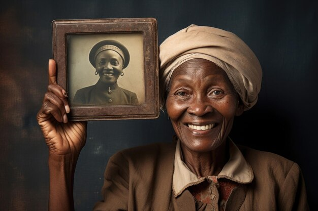

Biu era um menino curioso que vivia em uma pequena vila rodeada por montanhas. Desde cedo, ele sonhava em explorar o mundo além das colinas que cercavam sua casa. Um dia, encontrou um mapa antigo escondido no sótão de sua avó e decidiu seguir as trilhas misteriosas marcadas nele. Com uma mochila nas costas e coragem no coração, Biu partiu em uma aventura cheia de desafios e descobertas. Ao longo do caminho, fez novos amigos e aprendeu valiosas lições sobre amizade e coragem. No final, percebeu que o verdadeiro tesouro estava nas experiências vividas e não no ouro que tanto buscava.
A mulher de Biu, Lara, era conhecida por sua sabedoria e força. Crescida em uma família de curandeiros, ela sempre soube como usar as plantas e ervas da floresta para curar qualquer mal. Enquanto Biu viajava em suas aventuras, Lara mantinha a vila protegida com seus conhecimentos. Um dia, quando uma estranha doença atingiu a região, ela se aventurou sozinha na floresta em busca de um remédio raro. Após dias de procura, encontrou a planta mágica que salvou a todos. Desde então, Lara foi vista como a verdadeira heroína da vila, admirada por sua coragem e bondade.
O filho de Biu e Lara, chamado Kai, herdou a curiosidade do pai e a sabedoria da mãe. Desde pequeno, ele adorava explorar a floresta ao redor da vila, sempre atento aos ensinamentos de Lara sobre as plantas e os remédios naturais. Kai tinha uma habilidade especial de se conectar com os animais, e muitas vezes era visto conversando com os pássaros e ajudando animais feridos. Aos 10 anos, ele descobriu um filhote de lobo perdido e o adotou como seu fiel companheiro. Juntos, Kai e o lobo se tornaram inseparáveis, prontos para enfrentar qualquer aventura que o futuro lhes trouxesse.